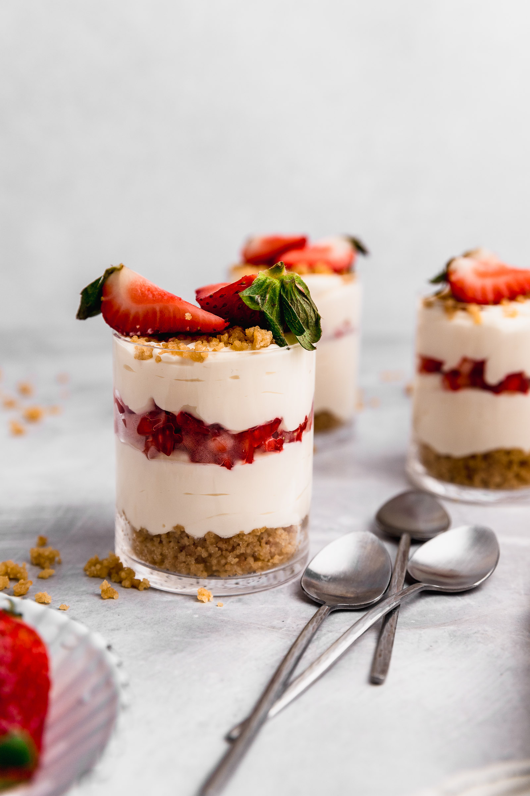

(“Instante de pura felicidad”).
• Porciones: 6 vasitos.
• Tiempo: 30 min + 2 h frío.
• Dificultad: fácil.
-150 g galletas trituradas + 60 g mantequilla derretida (base).
-300 g queso crema (tipo Philadelphia), suavizado.
-200 ml crema para batir (nata).
-80 g azúcar (1/3 taza).
-1 cdita esencia de vainilla.
-150 g coulis o mermelada de frutos rojos.
(breve):
1. Mezcla galleta con mantequilla y coloca 1–2 cucharadas en cada vasito.
2. Bate queso con azúcar y vainilla; monta la crema y mezcla suavemente para aligerar.
3. Rellena vasitos con crema y añade coulis encima. Refrigera 2 h.
Tips & presentación: decora con frutos frescos o ralladura.
Foto sugerida: vasitos en fila con capas visibles.
“La cocina es un arte, no solo química. Requiere instinto y gusto” - Marcel Boulestin.
